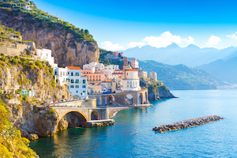

Explore the wonders of Italy with Grapevine Travel Co.!
We're big fans of Italy here at Grapevine Travel Co. Thanks to our dedicated team in Italy we can take you beyond the basics to discover the country's hidden gems. Whether it's your first Italian vacation or your tenth, we can create the perfect itinerary for you.
You can travel Italy in classic "semi-independent" Grapevine Travel Co. style with the benefit of our local staff's assistance before and during your trip, join one of our small group tours or take a private escorted tour with Justin, our Italy country manager. Whichever style you choose, your Italy vacation package is guaranteed to surprise and delight in equal measure.
Popular Italy Vacation Itineraries
Italy's a country that requires repeat visits. Our Italy vacation ideas have something for you whether it's your first time or your fifth. Our suggested itineraries for Italy and neighboring countries allow you to enjoy a multi-destination tour with ease. Our vacation packages make traveling in Italy truly hassle-free. We take care of getting you from place to place, accommodation, excursions, and activities.
We're Italian vacation experts
We're more than an Italy travel agent. We are Italian vacation experts. Our seamless and stress-free customized Italy vacation packages start with inside-out knowledge of our destinations. The carefully chosen lodgings we offer in Italy range from farm stays to luxurious palazzos. Our English-speaking local staff, drivers and guides are on-hand to assist. Whether it's about what to do and see, whether it's on a private tour, an organized excursion or just suggestions on how to spend some free time. Wherever you want to travel in Italy, we can make it happen. A travel agency or the mass market tour operators might make a few bookings for you. But we'll be with you every step of the way to ensure a spectacular trip that you'll remember forever. With a country so densely packed with riches, there will always be somewhere new to visit. Even if your desired destination isn't listed here, rest assured we can still include it in your custom trip plan. Contact us for a free travel consultation. We'll start planning the perfect trip to Italy, just for you.